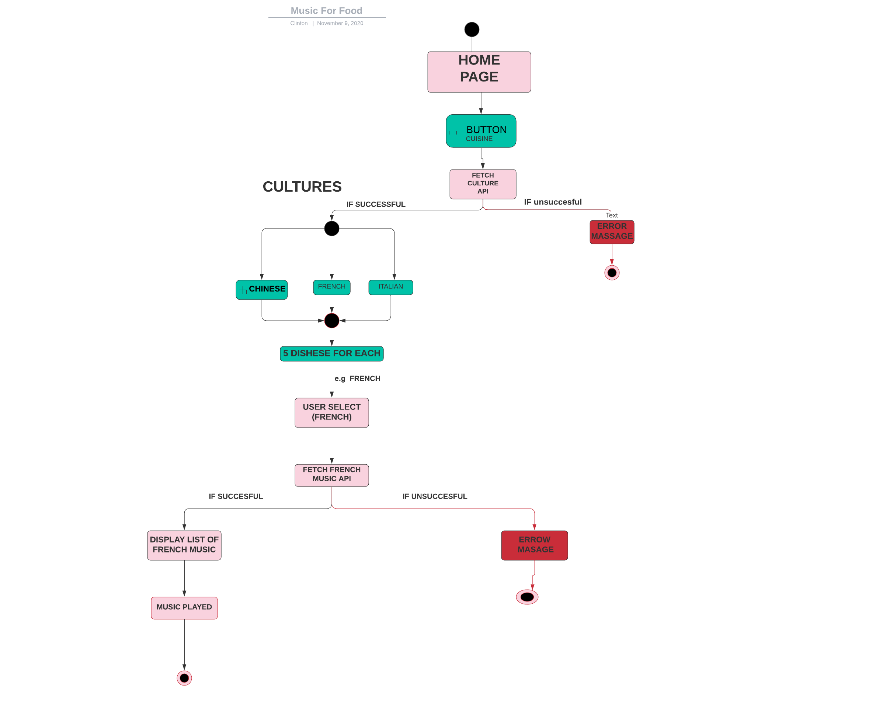

CATHLEEN,CHRISTIAN,GEROM,GEOFFREY AND CLINTON
started MUSIC FOR FOOD because The coronavirus outbreak has rattled our daily lives, and things seem to change minute by minute. But there’s one constant: we have to eat. How do we cook among the chaos? What recipes do we lean on? How can we use cooking to stay calm? That’s what we’re exploring in this app, The Way We’re Cooking Now. for most people,the usual cooking routine is to listen to The Daily or Up First and catch up on the news while they throw dinner together. But the past few months people have found them selves leaning more towards tunes that would help them immerse themself in the chopping, dicing, and sautéing—and maybe even help them think a little less about everything happening outside of their kitchens. we also noticed other people are thinking similarly: Cookbook author Alison Roman recently tweeted asking for album suggestions to listen all the way through while cooking beans, and BA editor Alex Delany made this “Working From Wherever” playlist on Spotify. So far we’ve found that cooking with music, as opposed to a newsy podcast, has helped facilitate more meditative cooking and even a few occasional dance breaks, two things we are currently in need of.JOURNEY TO SOLUTION
That is why,our TEAM has descided to make this experience more confortable by creating an app like this. we started by thinking of what we can do to better help this situation That's why we created this app.MILE STONES AND WIND
Along the way,we had to search for API's which will better give the required musical experience required by users,and also,we went throug alot tring to figure out which set of deashes are mostly used world whiled ,because of this,it wasn't easy getting the right stuff . We have been able to make it work sucessfully so far,and we are hopping on inproving on user experience always. we had to use alot of different softwares to make this work like TRELLO,POST-MAN,etcMISSION GOING
We want to be abe to make the society in a whole experience the world of cooking in a different Way. For example,The other day I saw a lady posted the song "Texas Sun” by Khruangbin and Leon Bridges on my Instagram Story with the text “Listened to this song while I cooked. Made me feel a little better.” she received so many responses with similar sentiments: “So good.” “OMG I also listened to this song to calm myself today.” I think we could all use a few more songs to add to our cooking playlists. Here in this app,will definitely make you feel good.
FLOW DIAGRAM OF APP
